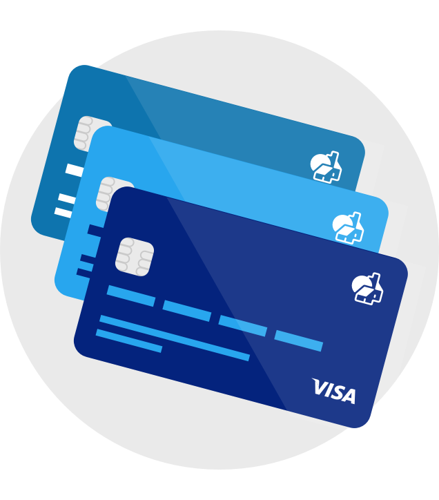

<ion-header no-border>

  <ion-navbar transparent>
    <ion-title>login</ion-title>
    <ion-buttons end>
      <button ion-button *ngIf="usProvider.activo()" (click)="usProvider.cerrar_sesion()">
        Salir
      </button>
    </ion-buttons>
  </ion-navbar>

</ion-header>


<ion-content padding>

  <ion-row class="app-icon-container">
    <ion-col text-center>
      
    </ion-col>
  </ion-row>

    <ion-item>
      <ion-label floating>Usuario</ion-label>
      <ion-input type="text" [(ngModel)]="usuario"></ion-input>
    </ion-item>
    <ion-item>
      <ion-label floating>Contraseña</ion-label>
      <ion-input type="password" [(ngModel)]="contrasena"></ion-input>
    </ion-item>

  <ion-row class="sign-in-button-container">
    <ion-col text-center>
      <button ion-button block color="secondary" [disabled]="usuario.length<1 || contrasena.length<1" block (click)="ingresar()">
        Iniciar Sesion
      </button>
    </ion-col>
  </ion-row>

  <ion-row >
    <ion-col text-center>
      <button ion-button clear color="light" >
        Wily App
      </button>
    </ion-col>
  </ion-row>

</ion-content>
